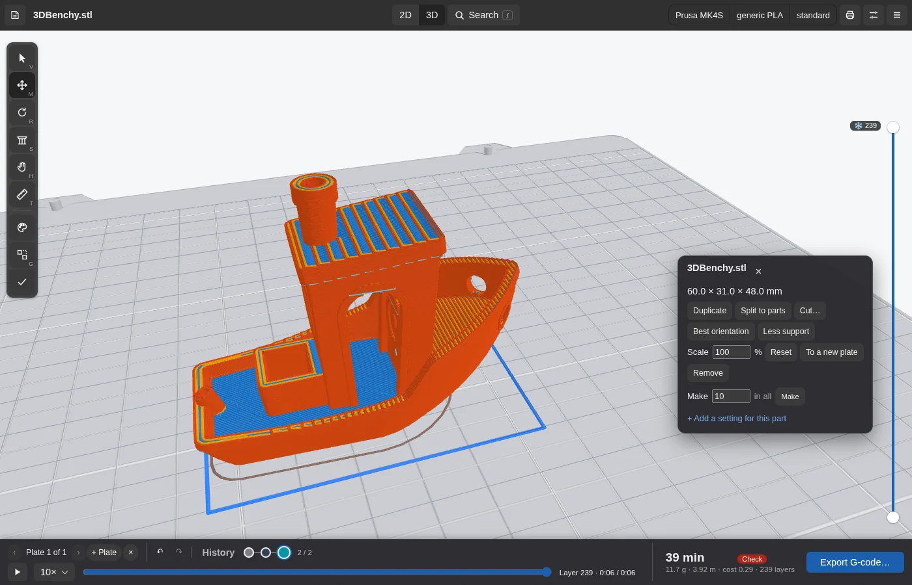

Everyday tasks
5Place the parts
Move, turn, scale, and cut the parts on the bed. A part obeys physics: if it cannot stand, it falls over.

Select a part
Click a part with the Move tool (M). With another tool, hold Ctrl and click. The card of the part opens:
| Button | What it does |
|---|---|
| Duplicate (D) | A copy at a free place, with the settings of the part. |
| Split to parts | Each separate body becomes a part. |
| Cut… | Cuts the part in two with a level plane. |
| Best orientation, Less support | Turns the part. |
| Scale, Reset | The scale in %, or the turn and the scale of the file. |
| To a new plate | Moves the part to a new plate. |
| Remove (Delete) | Removes the part. |
| Make [10] in all | Copies, until there are that many. |
| + Add a setting for this part | A setting for this part only. |
Tab and Shift+Tab select the next part. Esc clears the selection.
Move and turn
- Move. Drag the part with the Move tool. The arrow keys move it 1 mm (Shift: 10 mm).
- Turn on the bed. Turn the wheel over the part with the Move tool: 15° for each step.
- Turn about any axis. Press R. Drag a ring: red turns about X, green about Y, blue about Z.

A part falls over

After a turn, zslice checks if the part can stand. If its center of mass is past its foot, the part falls onto a face, as on a real bed. A note says so. With support on, the support holds the part, and it stays as you turned it.
Grab a part
Press H for the Grab tool. Then:
- Click a part to pick it up.
- Move the pointer to carry it. The wheel lifts it. Alt and a move turn it (Shift: steps of 15°).
- Click again, or press Esc, to let go. With support off, the part falls and rests flat. With support on, it keeps its turn.
Placement
Right-click a part, then Placement:
- Smart placement: the least support, the most area on the bed, and a low height.
- Less support: the least support only.
- Strong along X, Y, or Z of the part: a print is weakest across its layers. So the part turns until that axis lies in the layers.
- Put this side on the bed: the side at the click goes down.
Right-click the empty view for Arrange the plate.
Cut a part
- Select the part, and click Cut….
- Set the height of the cut. An orange plane shows it.
- Keep Turn the top over on: the top prints on its flat cut face.
- Keep Pegs to line up the parts on, and pick the count and the size.
- Click Cut.
After the print, glue the pegs into the holes of one part, and press the other part on.